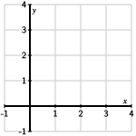

Section 1.5 Least squares problems
¶A linear system with more equations than unknowns usually has no solutions. Suppose, for example, that the equation \(A\xvec=\bvec\) is formed from an \(m\times n\) matrix \(A\) having more rows than columns. Because not every row can have a pivot position, the columns of \(A\) will not span \(\real^m\text{.}\) This means that for most vectors \(\bvec\text{,}\) the equation \(A\xvec=\bvec\) will be inconsistent.
Our story needn't end there, however. When the equation \(A\xvec=\bvec\) is inconsistent, we may instead seek the vector \(\xvec\) where \(A\xvec\) is as close as possible to \(\bvec\text{.}\) Using the ideas we have constructed in this chapter, we will see that orthogonal projections give us just the right tool for doing this.
Preview Activity 1.5.1.
If \(\bvec\) is in \(\col(A)\text{,}\) what does this say about the consistency of the equation \(A\xvec = \bvec\text{?}\)
-
Is there a solution to the equation \(A\xvec=\bvec\) where \(A\) and \(\bvec\) are such that
\begin{equation*} \begin{bmatrix} 1 \amp 2 \\ 2 \amp 5 \\ -1 \amp 0 \\ \end{bmatrix} \xvec = \threevec5{-3}{-1}\text{.} \end{equation*} We know that \(\threevec12{-1}\) and \(\threevec250\) form a basis for \(\col(A)\text{.}\) Find an orthogonal basis for \(\col(A)\text{.}\)
Find the orthogonal projection \(\widehat\bvec\) of \(\bvec\) onto \(\col(A)\text{.}\)
Explain why the equation \(A\xvec=\widehat\bvec\) must be consistent and then find its solution.
Subsection 1.5.1 A first example
The preview activity illustrates a strategy for working with inconsistent systems \(A\xvec=\bvec\text{.}\) If we find \(\bhat\text{,}\) the orthogonal projection of \(\bvec\) onto \(\col(A)\text{,}\) the equation \(A\xvec=\bhat\) admits a solution \(\xvec\text{.}\) Since \(\bhat\) is the vector in \(\col(A)\) that is closest to \(\bvec\text{,}\) this solution is, in a sense, the best possible. More specifically, \(\xvec\) is the vector for which \(A\xvec\) is as close to \(\bvec\) as possible.
We begin with an example that demonstrates how this can be useful.
Activity 1.5.2.
Suppose we have three data points \((1,1)\text{,}\) \((2,1)\text{,}\) and \((3,3)\) and that we would like to find a line passing through them.
Plot these three points in Figure 1.5.1. Are you able to draw a line that passes through all three points?
Figure 1.5.1. Plot the three data points here. -
Let's write some conditions that would describe a line passing through the points. Remember that the equation of a line can be written as \(y=b + mx\) where \(m\) is the slope and \(b\) is the \(y\)-intercept. We will try to find \(m\) and \(b\) so that the three points lie on the line.
The first data point \((1,1)\) will give us an equation for \(m\) and \(b\text{.}\) In particular, we know that when \(x=1\text{,}\) then \(y=1\) so we have \(b + m(1) = 1\) or \(b + m = 1\text{.}\) Use the other two data points to create a linear system describing \(m\) and \(b\text{.}\)
We have obtained a linear system having three equations, one from each data point, for the two unknowns \(b\) and \(m\text{.}\) Identify a matrix \(A\) and vector \(\bvec\) so that the system has the form \(A\xvec=\bvec\text{,}\) where \(\xvec=\twovec bm\text{.}\)
Is there a solution to this linear system? How does this relate to your attempt to draw a line through the three points above?
Since this system is inconsistent, we know that \(\bvec\) is not in the column space \(\col(A)\text{.}\) Find an orthogonal basis for \(\col(A)\) and use it to find the orthogonal projection \(\widehat\bvec\) of \(\bvec\) onto \(\col(A)\text{.}\)
Since \(\widehat\bvec\) is in \(\col(A)\text{,}\) the equation \(A\xvec = \widehat\bvec\) is consistent. Find its solution \(\xvec = \twovec{b}{m}\) and sketch the line \(y=b + mx\) in Figure 1.5.1. We say that this is the line of best fit.
The example appearing in this activity illustrates the idea behind least squares problems. When presented with a linear system that has no solution, we use orthogonal projection to trade it in for a new linear system that we can solve.
In the example above, we call the data points \((x_i, y_i)\) and construct the matrix \(A\) and vector \(\bvec\) as
If we represent a line using the vector \(\xvec = \twovec bm\text{,}\) the equation \(A\xvec=\bvec\) seeks a line passing through all the data points. In our example, it is visually apparent that there is no such line, a fact confirmed by the inconsistency of the equation \(A\xvec=\bvec\text{.}\)
Remember that \(\bhat\text{,}\) the orthogonal projection of \(\bvec\) onto \(\col(A)\text{,}\) is the closest vector in \(\col(A)\) to \(\bvec\text{.}\) Therefore, when we solve the equation \(A\xvec=\bhat\text{,}\) we are finding the vector \(\xvec\) so that \(A\xvec = \threevec{b+mx_1}{b+mx_2}{b+mx_3}\) is as close to \(\bvec=\threevec{y_1}{y_2}{y_3}\) as possible. The square of the distance between \(A\xvec\) and \(\bvec\) is
so this method finds the values for \(b\) and \(m\) that make this sum of squares as small as possible. This is why we call this a least squares problem.
The expression for \(\len{b-A\xvec}^2\) has additional geometric meaning within the context of the problem. If we draw the line defined by the vector \(\xvec=\twovec bm\text{,}\) we may measure by how much the line misses the data points. For instance \(y_i - (b + mx_i)\) is the vertical distance between the line and the data point \((x_i, y_i)\text{,}\) as shown in Figure 1.5.2. Seen in this way, the square of the distance \(\len{\bvec-A\xvec}^2\) measures how much the line defined by the vector \(\xvec\) misses the data points. The solution to the least squares problem is the line that misses the data points by the least amount possible.
Subsection 1.5.2 Solving least squares problems
Now that we've seen an example of what we're trying to accomplish, let's put this technique into a more general framework.
Given an inconsistent system \(A\xvec = \bvec\text{,}\) we seek to find \(\xvec\) that minimizes the distance from \(A\xvec\) to \(\bvec\text{.}\) We find \(\xvec\) by forming \(\widehat\bvec\text{,}\) the orthogonal projection of \(\bvec\) onto the column space \(\col(A)\) and then solving \(A\xvec = \widehat\bvec\text{.}\)
Before going further, let's take note of what a solution means in this context. For instance, we know that there is no solution to the equation \(A\xvec = \bvec\text{.}\) We therefore modify the vector on the right-hand side to \(\bhat\text{,}\) the orthogonal projection of \(\bvec\) onto \(\col(A)\text{.}\) As we move forward, we will denote the solution of \(A\xvec = \bhat\) by \(\xhat\) and call this vector the least squares approximate solution of \(A\xvec=\bvec\) to distinguish it from a (non-existent) solution of \(A\xvec=\bvec\text{.}\)
Let's now remember how orthogonal projection works: the orthogonal projection \(\widehat\bvec\) of \(\bvec\) onto the column space \(\col(A)\) is defined so that \(\widehat\bvec - \bvec\) is orthogonal to \(\col(A)\text{.}\) In other words, \(\bhat-\bvec\) is in the orthogonal complement \(\col(A)^\perp\text{.}\) Remember also that \(\col(A)^\perp = \nul(A^T)\text{,}\) which implies that
Finally, the least squares approximate solution is the vector \(\xhat\) such that \(A\xhat = \widehat\bvec\text{,}\) which gives
Let's record our work in the following proposition.
Proposition 1.5.3.
The least squares approximate solution \(\widehat\xvec\) to the equation \(A\xvec = \bvec\) is given by the normal equations
The linear system represented by the normal equations will always be consistent. This is because \(\bhat\text{,}\) the orthogonal projection of \(\bvec\) onto \(\col(A)\text{,}\) is a vector in \(\col(A)\) so that \(A\xhat=\bhat\) will always have a solution.
If we further assume that the columns of \(A\) are linearly independent, there is a unique solution to the normal equations. To see why, let's imagine, for the moment, that \(\xvec\) is a solution to the homogeneous equation \(A^TA\xvec = \zerovec\text{.}\) Then we have
In other words, if \(\xvec\) is a solution to the homogeneous equation \(A^TA\xvec = \zerovec\text{,}\) then we know that \(A\xvec = \zerovec\text{.}\) Since we are assuming that the columns of \(A\) are linearly independent, we know that the homogeneous equation \(A\xvec=\zerovec\) has only the trivial solution \(\xvec = \zerovec\text{.}\) Therefore, the homogeneous equation \(A^TA\xvec=\zerovec\) has only the trivial solution, which means that \(A^TA\) has a pivot position in every column. Hence, the normal equations \(A^TA\xhat = A^T\bvec\) must have a unique solution.
Proposition 1.5.4.
If the columns of \(A\) are linearly independent, then there is a unique least squares approximate solution \(\xhat\) to the equation \(A\xvec=\bvec\) given by the normal equations
Let's put this proposition to use in the next activity.
Activity 1.5.3.
The rate at which a cricket chirps is related to the outdoor temperature, as reflected in some experimental data that we'll study in this activity. The chirp rate \(C\) is expressed in chirps per second while the temperature \(T\) is in degrees Fahrenheit. Evaluate the following cell to load in the data:
Evaluating this cell also provides:the vectors
chirpsandtempsformed from the columns of the data set.the command
onesvec(n), which creates an \(n\)-dimensional vector whose entries are all one.Remember that you can form a matrix whose columns are the vectors
v1andv2withmatrix([v1, v2]).T.
We would like to represent this relationship by a linear function
Use the first data point \((C_1,T_1)=(20.0,88.6)\) to write an equation involving \(\beta_0\) and \(\beta_1\text{.}\)
Suppose that we represent the unknowns using a vector \(\xvec = \twovec{\beta_0}{\beta_1}\text{.}\) Use the data to create the matrix \(A\) and vector \(\bvec\) from the 15 data points such that the linear system \(A\xvec= \bvec\) describes the unknown vector \(\xvec\text{.}\)
Write the normal equations \(A^TA\xhat = A^T\bvec\text{;}\) that is, find the matrix \(A^TA\) and the vector \(A^T\bvec\text{.}\)
-
Solve the normal equations to find \(\xhat\text{,}\) the least squares approximate solution to the equation \(A\xvec=\bvec\text{.}\) Call your solution
xhatsince Sage thinksxhas another meaning.What are the values of \(\beta_0\) and \(\beta_1\) that you found?
-
If the chirp rate is 22 chirps per second, what is your prediction for the temperature?
You can plot the data and your line, assuming you called the solution
xhat, using the cell below.
This example demonstrates an approach called linear regression, in which a collection of data is modeled using a linear function found by solving a least squares problem. Once we have the linear function that best fits the data, we can make predictions about situations that we haven't encountered in the data.
If we're going to use our function to make predictions, it's natural to ask how much confidence we have in these predictions. This is a statistical question that leads to a rich and well-developed theory, which we won't explore in much detail here. However, there is one simple measure of how well our linear function fits the data, which is known as the coefficient of determination and denoted by \(R^2\text{.}\)
We have seen that the square of the distance \(\len{\bvec-A\xvec}^2\) measures the amount by which the line fails to pass through the data points. When the line is close to the data points, we expect this number to be small. However, the size of this measure depends on the scale of the data. For instance, the two lines shown in Figure 1.5.5 seem to fit the data equally well, but \(\len{\bvec-A\xhat}^2\) is 100 times as large on the right.
The lines seem to fit equally well in spite of the fact that \(\len{\bvec-A\xhat}^2\) differs by a factor of 100.
The coefficient of determination \(R^2\) is defined by normalizing \(\len{\bvec-A\xhat}^2\) so that it is independent of the scale. In particular, we have
Definition 1.5.6. Coefficient of determination.
The coefficient of determination is
where \(\widetilde{\bvec}\) is the vector obtained by demeaning \(\bvec\text{.}\)
We will provide a more complete explanation of this definition when we explore variance in the next chapter. For the time being, it's enough to know that \(0\leq R^2 \leq 1\) and that the closer \(R^2\) is to 1, the better the line fits the data. In our original example, illustrated in Figure 1.5.5, we find that \(R^2 = 0.75\text{.}\)
It's important to note that assessing the confidence we have in predictions made with a solution to a least squares problem can require considerable thought, and it would be naive to simply rely on the value of \(R^2\text{.}\)
Subsection 1.5.3 Using \(QR\) factorizations
As we've seen, the least squares approximate solution \(\xhat\) to \(A\xvec=\bvec\) may be found by solving the normal equations \(A^TA\xhat = A^T\bvec\text{,}\) and this has been a practical strategy in the small-scale problems we've seen so far. However, numerical problems may appear when computing \(A^TA\) in larger problems; that is, small rounding errors can accumulate and produce inaccurate final results.
As the next activity demonstrates, there is an alternate method for finding the least squares approximate solution \(\xhat\) using a \(QR\) factorization of the matrix \(A\text{,}\) and this method is preferred as it has better numerical properties.
Activity 1.5.4.
-
Suppose we are interested in finding the least squares approximate solution to the equation \(A\xvec = \bvec\) and that we have the \(QR\) factorization of \(A\text{:}\) \(A=QR\text{.}\) Explain why the least squares approximation solution is given by solving
\begin{align*} A\xhat \amp = QQ^T\bvec \\\\ QR\xhat \amp = QQ^T\bvec \\ \end{align*} -
Multiply both sides of the second expression by \(Q^T\) and explain why
\begin{equation*} R\xhat = Q^T\bvec. \end{equation*} -
Since \(R\) is upper triangular, this is a relatively simple equation to solve using back substitution, as we saw in (((Unresolved xref, reference "sec-gaussian-revisited"; check spelling or use "provisional" attribute))) . We will therefore write the least squares approximate solution as
\begin{equation*} \xhat = R^{-1}Q^T\bvec, \end{equation*}and put this to use in the following context.
Brozak’s formula, which is used to calculate a person's body fat index (\(BFI\)), is
\begin{equation*} BFI = 100 \left(\frac{4.57}{\rho} - 4.142\right) \end{equation*}where \(\rho\) denotes a person's body density in grams per cubic centimeter. Obtaining an accurate measure of \(\rho\) is difficult, however, because it requires submerging the person in water and measuring the volume of water displaced. Instead, we will gather several other body measurements, which are more easily obtained, and use it to predict \(BFI\text{.}\) For instance, suppose we take 10 patients and measure their weight \(w\) in pounds, height \(h\) in inches, abdomen \(a\) in centimeters, wrist circumference \(r\) in centimeters, neck circumference \(n\) in centimeters, and \(BFI\text{.}\) Evaluating the following cell loads and displays the data.
In addition, that cell provides:vectors
weight,height,abdomen,wrist,neck, andBFIformed from the columns of the dataset.the command
onesvec(n), which returns an \(n\)-dimensional vector whose entries are all one.the command
QR(A)that returns the \(QR\) factorization of \(A\) asQ, R = QR(A).the command
demean(v), which returns the demeaned vector \(\widetilde{\vvec}\text{.}\)
We would like to find the linear function
\begin{equation*} \beta_0 + \beta_1w + \beta_2h + \beta_3a + \beta_4r + \beta_5n = BFI \end{equation*}that best fits the data.
Use the first data point to write an equation for the parameters \(\beta_0,\beta_1,\ldots,\beta_5\text{.}\)
Describe the linear system \(A\xvec = \bvec\) for these parameters. More specifically, how will you form the matrix \(A\) and the vector \(\bvec\text{?}\)
Form the matrix \(A\) and find its \(QR\) factorization in the cell below.
Find the least squares approximate solution \(\xhat\) by solving the equation \(R\xhat = Q^T\bvec\text{.}\) You may want to use
N(xhat)to display a decimal approximation of the vector.What are the parameters \(\beta_0,\beta_1,\ldots,\beta_5\) that best fit the data?
Find the coefficient of determination \(R^2\) for your parameters. What does this imply about the quality of the fit?
Suppose a person's measurements are: weight 190, height 70, abdomen 90, wrist 18, and neck 35. Estimate this person's \(BFI\text{.}\)
Suppose we have \(A=QR\text{,}\) and we would like to find the least squares approximate solution \(\xhat\) of \(A\xvec=\bvec\text{.}\) Our first step is to project \(\bvec\) orthogonally onto \(\col(A)\) to obtain \(QQ^T\bvec\text{.}\) The least square approximate solution is then
If we multiply both sides of this expression by \(Q^T\) and remember that \(Q^TQ=I\text{,}\) the identity matrix, we have
This is convenient because, as we recall, \(R\) is an upper triangular matrix so that the equation \(R\xhat = Q^T\bvec\) can be efficiently solved using back substitution.
Proposition 1.5.7.
Given the \(QR\) factorization, \(A=QR\text{,}\) the least squares approximate solution \(\xhat\) to the equation \(A\xvec=\bvec\) is given by
Subsection 1.5.4 Polynomial Regression
In the examples we've seen so far, we have fit a linear function to a dataset. Sometimes, however, a polynomial, such as a quadratic function, may be more appropriate. It turns out that the techniques we've developed in this section are still useful. Here's an example that demonstrates.
Activity 1.5.5.
-
Suppose that we have a small data set containing the points \((0,2)\text{,}\) \((1,1)\text{,}\) \((2,3)\text{,}\) and \((3,3)\text{,}\) such as appear when the following cell is evaluated.
In addition to loading and plotting the data, evaluating that cell provides the following commands:Q, R = QR(A)returns the \(QR\) factorization of \(A\text{.}\)demean(v)returns the demeaned vector \(\widetilde{\vvec}\text{.}\)
Let's fit a quadratic function of the form
\begin{equation*} \beta_0 + \beta_1 x + \beta_2 x^2 = y \end{equation*}to this dataset.
Write four equations, one for each data point, for the coefficients \(\beta_0\text{,}\) \(\beta_1\text{,}\) and \(\beta_2\text{.}\)
-
Express these four equations as a linear system \(A\xvec = \bvec\) where \(\xvec = \threevec{\beta_0}{\beta_1}{\beta_2}\text{.}\)
Find the \(QR\) factorization of \(A\) and use it to find the least squares approximate solution \(\xhat\text{.}\)
Use the parameters \(\beta_0\text{,}\) \(\beta_1\text{,}\) and \(\beta_2\) that you found to write the quadratic function that fits the data. You can plot this function, along with the data, by entering your function in the appropriate place below.
What is your predicted \(y\) value when \(x=1.5\text{.}\)
Find the coefficient of determination \(R^2\) for the quadratic function? What does this say about the quality of the fit?
-
Now fit a cubic polynomial of the form
\begin{equation*} \beta_0 + \beta_1x + \beta_2 x^2 + \beta_3x^3 = y \end{equation*}to this dataset.
Find the coefficient of determination \(R^2\) for the cubic function. What does this say about the quality of the fit?
What do you notice when you plot the cubic function along with the data? How does this reflect the value of \(R^2\) that you found?
The matrices \(A\) that you created in the last activity when fitting a quadratic and cubic function to a dataset have a special form. In particular, if the data points are labeled \((x_i, y_i)\) and we seek a degree \(k\) polynomial, then
This is called a Vandermonde matrix of degree \(k\text{.}\)
Activity 1.5.6.
This activity explores a dataset describing Arctic sea ice. This dataset comes from Sustainability Math.
Evaluating the cell below will plot the extent of Arctic sea ice, in millions of square kilometers, during the twelve months of 2012.
In addition, you have access to a few special variables and commands:monthis the vector of month values andiceis the vector of sea ice values from the table above.vandermonde(x, k)constructs the Vandermonde matrix of degree \(k\) using the points in the vectorx.Q, R = QR(A)provides the \(QR\) factorization of \(A\text{.}\)demean(v)returns the demeaned vector \(\widetilde{\vvec}\text{.}\)
Find the vector \(\xhat\text{,}\) the least squares approximate solution to the linear system that results from fitting a degree 5 polynomial to the data.
If your result is in the variable
xhat, you may plot the polynomial and the data together using the following cell.Find the coefficient of determination \(R^2\) for this polynomial fit.
Repeat these steps to fit a degree 8 polynomial to the data, plot the polynomial with the data, and find \(R^2\text{.}\)
-
Repeat one more time by fitting a degree 11 polynomial to the data, plotting it, and finding \(R^2\text{.}\)
It's certainly true that higher degree polynomials fit the data better, as seen by the increasing values of \(R^2\text{,}\) but that's not always a good thing. For instance, when \(k=11\text{,}\) you may notice that the polynomial wiggles a little more than it should. In this case, the polynomial is trying too hard to fit the data, which usually has some errors in it, especially if it's obtained from measurements. The error built in to the data is called noise, and acknowledging its presence means that we shouldn't expect our polynomial to fit the data perfectly. When we choose a polynomial whose degree is too high, we give the noise too much weight in the model, which leads to some undesirable behavior, like the wiggles in the graph.
Choosing the degree of the polynomial to be too high is called overfitting, a phenomenon that appears in many machine learning applications. Generally speaking, we would like to choose \(k\) large enough to capture the essential features of the data but not so large that we overfit and build the noise into the model. There are ways to determine the optimal value of \(k\text{,}\) but we won't pursue that here.
Choosing a reasonable value of \(k\text{,}\) estimate the extent of Arctic sea ice at month 6.5, roughly at the Summer Solstice.
Subsection 1.5.5 Summary
This section introduced some types of least squares problems and a framework for working with them.
Given an inconsistent system \(A\xvec=\bvec\text{,}\) we find \(\xhat\text{,}\) the least squares approximate solution, by requiring that \(A\xhat\) be as possible to \(\bvec\) as possible. In other words, \(A\xhat = \bhat\) where \(\bhat\) is the orthogonal projection of \(\bvec\) onto \(\col(A)\text{.}\)
One way to find \(\xhat\) is by solving the normal equations \(A^TA\xhat = A^T\bvec.\) This is not our preferred method since numerical issues can arise when constructing \(A^TA\text{.}\)
A second way to find \(\xhat\) uses a \(QR\) factorization of \(A\text{.}\) If \(A=QR\text{,}\) then \(\xhat = R^{-1}Q^T\bvec\) and finding \(R^{-1}\) is computationally feasible since \(R\) is upper triangular.
This technique may be applied widely and is useful for modeling data. We saw examples in this section where linear functions of several input variables and polynomials provided effective models for various datasets. A simple measure of the quality of the fit is the coefficient of determination \(R^2\) though some additional thought should be given in real applications.